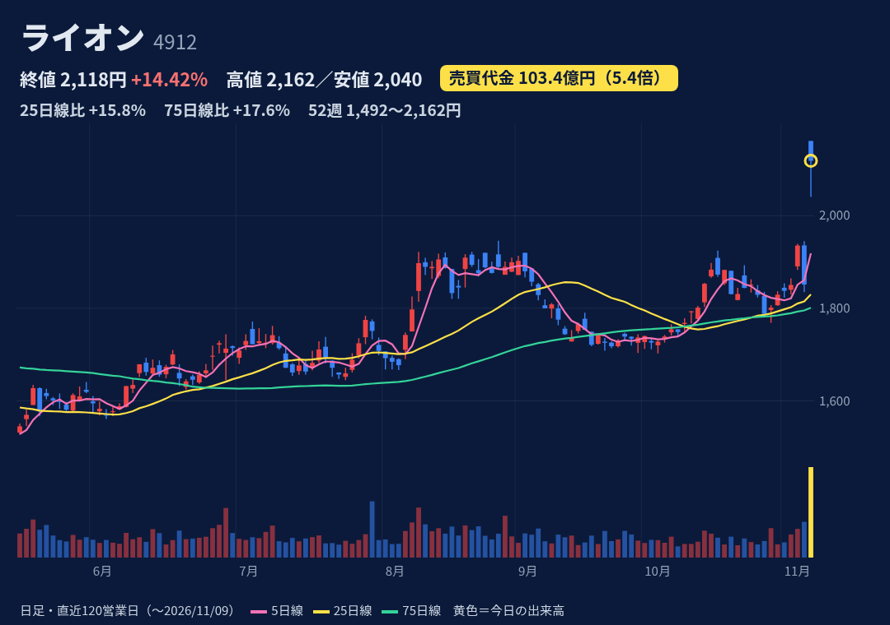
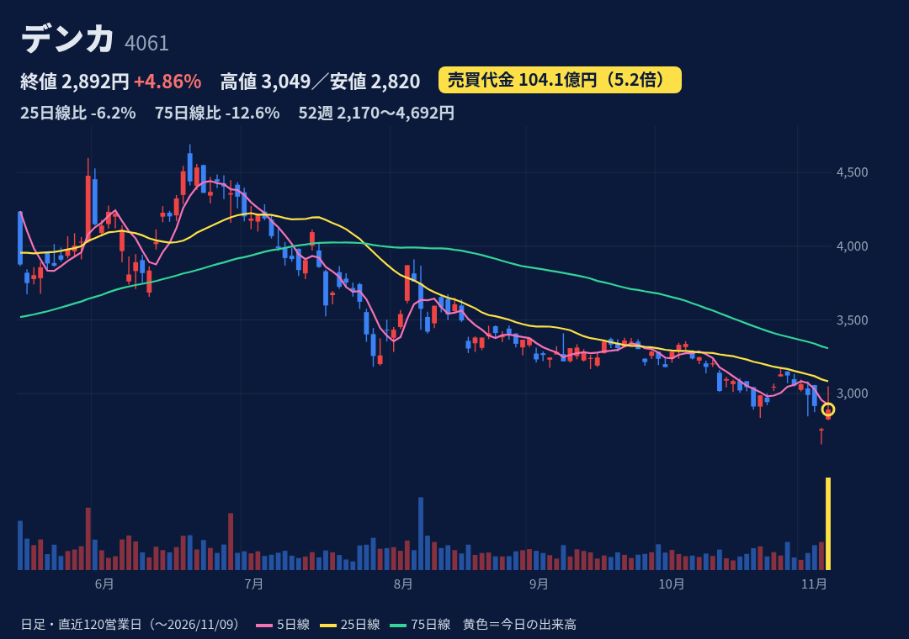
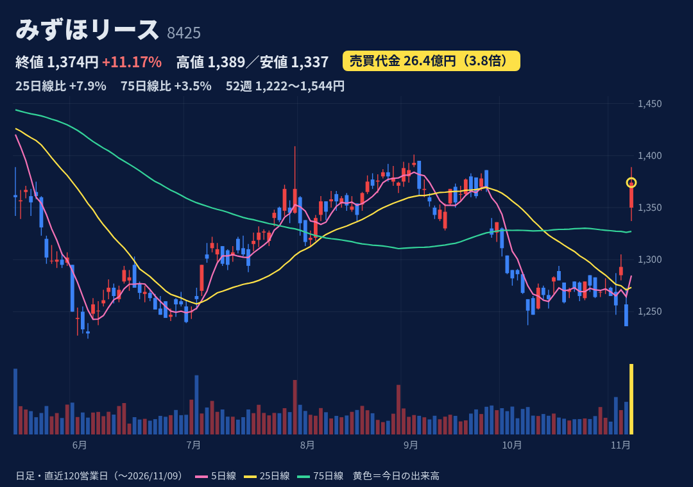
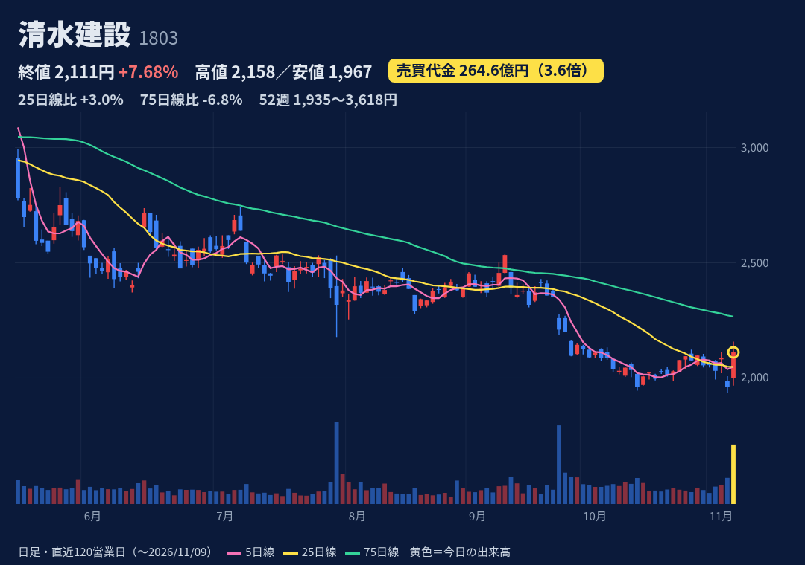
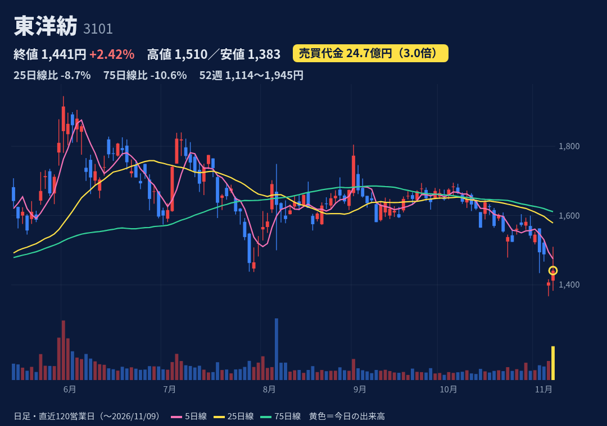
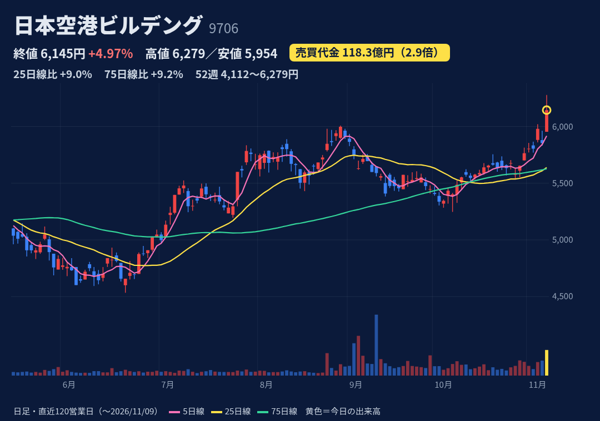

歯みがき・洗剤などのトイレタリー大手。オーラルケアが主力で、アジアなど海外にも展開。
11/6 15:30に3Q決算（1〜9月：売上3254億+6.7%、営業益313億+12.4%）と自社株買い（上限1600万株＝5.8%・200億円、消却予定）を発表。11/9にToSTNeT-3で540.1万株を取得
1〜9月：売上+6.7%、営業益+12.4%、最終益179億−13.6%（化学品子会社の売却に伴う税金）。7〜9月の最終益は−36%。通期事業利益350億（+13.8%）は据え置き、最終益の進捗71.9%。次の決算（本決算）の日付は未確認
寄り付き2161.5円（+16.7%）が高値で、終値2118.5円の陰線（寄り天）。52週高値を更新（年間レンジ内の位置94%）。25日線から+15.8%、75日線から+17.6%離れている
JPX 11/6時点：買残4.7万株・売残3.84万株（倍率1.22倍）。今日の出来高491万株に比べてごく小さい。日々公表・規制はなし
急騰後に失速した前例あり（2/13 +8.6%→5日後−4.8%、8/10 +5.6%→−3.4%）。ToSTNeT-3の買いは今日で終わり、残りは4/30までの市場買い。PERは23倍台

化学メーカー。電子・先端材料、エラストマー・インフラ資材、ヘルスケア（ワクチン・検査試薬）などを手がける。
今日11:00に中間決算を発表。中間営業益247億（前回予想170億）、通期の経常利益を200億→260億に30%上方修正。同時に米国子会社DPEの事業整理損失105億（特別損失）とスチレン事業の分社化も発表
中間：売上2087億+6.1%、営業益247億（前年の2.5倍）。通期：売上4250億（下方修正）、営業益370億（+41%）、進捗67%。上振れの主因は在庫受払による一時的な益。株探の試算では下期の経常利益は−61%
始値2824.5円→高値3049円→終値2892.5円。陽線だが、上ヒゲが値幅の68%を占める。年間レンジ内の位置26%で、25日線（3084円）・75日線（3308円）を下回る
JPX 11/6時点：買残57.0万株（10/30時点の51.2万株から増加）・売残4.3万株、倍率13.2倍の買い長。日々公表・規制はなし
増益は原料高に伴う在庫受払の一時益が中心で、下期は反動を見込む。米DPEの特別損失が続く可能性。急騰した翌週に反落した前例あり（2/27 +6.6%→5日後−3.8%）

みずほFG系の総合リース会社。リース・割賦、ファイナンス、不動産などを手がける。持分法利益の比重が大きい。
11/6 15:30に中間決算と上方修正を発表。経常利益は通期670億→720億（+7.5%、最高益予想を上乗せ）、純利益は520億→570億。年間配当を52円→58円に増額
中間：営業益305億+30.0%、経常益531億+51.4%（持分法益204億+63.6%）、純益426億+46.8%。通期の経常益720億に対する進捗74%。株探の試算では下期の経常利益は−37%
始値1350円（+9.2%の窓あけ）、高値1389円、終値1374円の陽線。上ヒゲは値幅の29%。年間レンジ内の位置47%（高値1544円・安値1224円）で、25日線・75日線の上に出た
JPX 11/6時点：買残56.7万株・売残1.9万株、倍率30.5倍の買い長（10/30時点は63.3万株）。日々公表・規制はなし
7月にみずほFGを引受先とする種類株の第三者割当を実施（転換の条件は未確認）。信用倍率が高い。急騰したあとの前例は少ない（売買代金が増えた日は年2回だけ）

スーパーゼネコンの一角。国内の建築・土木が主力で、開発事業なども手がける。
今日12:00に中間決算を発表。通期の経常利益を1835億→2215億に20.7%上方修正し、34期ぶりの最高益予想を上乗せ。年間配当は77円→89円に増額。採算改善（完成工事利益率12.7%→14.5%）が理由
中間：売上1兆616億+18.4%、営業益881億（前年の2.3倍）。通期：売上2兆3800億、営業益1920億（+61.8%）、進捗46%。最終益には負ののれん355億（現金を伴わない益）を含む
始値2000.5円、高値2158円、終値2111円の陽線（上ヒゲは値幅の25%）。11/6に52週安値1935円をつけたばかりで、年間レンジ内の位置は10%。25日線の上、75日線（2266円）の下。3月高値3618円からは−42%
JPX 11/6時点：買残282万株・売残6.4万株、倍率43.8倍と買い長が目立つ。日々公表・規制はなし
上値で信用買いのやれやれ売りが出やすい需給。決算で急騰したあとに失速した前例（5/12 +10.7%→5日後−20.6%）。既存の転換社債（2031年・2033年満期）による潜在的な希薄化

化学・繊維メーカー。工業用フィルム（MLCC用離型フィルム・偏光子保護フィルム）、樹脂、ライフサイエンス、繊維を手がける。
今日13:00に中間決算を発表。通期の営業利益を230億→270億に上方修正（AIサーバー向けのMLCC用離型フィルムなどが好調）。一方で、医薬品受託の減損により最終益は70億→40億に下方修正
中間：売上2185億+7.1%、営業益163億+37.9%、純益34億−40.6%。通期：売上4400億、営業益270億（−3.2%）、進捗60%。株探の試算では下期の経常利益は−45%
始値1412円、高値1510円、終値1441円の陽線。上ヒゲが値幅の54%。年間レンジ内の位置38%で、25日線（1578円）・75日線（1611円）の下。直前4日間は下げていた
JPX 11/6時点：買残57.1万株・売残3.4万株、倍率16.9倍の買い長。日々公表・規制はなし
最終益の下方修正（医薬品受託の減損、エルサルバドル子会社の事業休止による特別損失）。急騰後に約10%下げた前例が複数（5/13 +14%→5日後−9.9%、2/27 +8.3%→−13.1%）

羽田空港の旅客ターミナルの運営会社。施設の賃貸・利用料や、免税店などの物販・飲食が収益の柱。
11/6 16:30に中間決算を発表。通期の営業利益を456億→515億に上方修正（国際線の旅客が増えたこと、円安で免税店の売上が伸びたこと）。基準日2027/3/31で1株を3株に分割することも発表
中間：売上1486億+5.0%、営業益277億+29.2%。通期：売上3047億、営業益515億（+14.3%）、進捗54%。最終益258億は前期比−11.5%の予想。株探の試算では下期の経常利益は−2%
始値5954円（安値）、高値6279円、終値6145円の陽線（上ヒゲは値幅の41%）。52週高値を更新（位置94%）し、25日線・75日線から約+9%
JPX 11/6時点：買残2.4万株・売残3.9万株、倍率0.61倍の売り長。日々公表・規制はなし
11/9にゴールドマン・サックスが「売り」を継続（目標株価5200→5100円、現在の株価より下）。9月に売買代金が増えた日（9/2・9/3・9/9）はいずれも株価が下げていた
株価・出来高・信用残：取引所データ。材料：各社開示・各社報道。